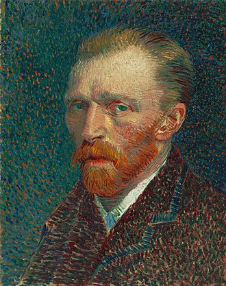

Leonardo di ser Piero da Vinci was an Italian polymath of the High Renaissance who was active as a painter, draughtsman, engineer, scientist, theorist, sculptor, and architect.
For nearly 80 of his 91 years, Picasso devoted himself to an artistic production that contributed significantly to the whole development of modern art in the 20th century, notably through the invention of Cubism (with the artist Georges Braque) about 1907.

Vincent Willem van Gogh was a Dutch Post-Impressionist painter who posthumously became one of the most famous and influential figures in Western art history. In a period of 10 years, he created about 2,100 artworks, including around 860 oil paintings, most of which date from the last two years of his life.